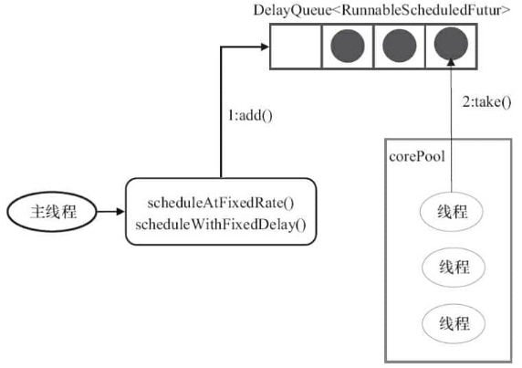
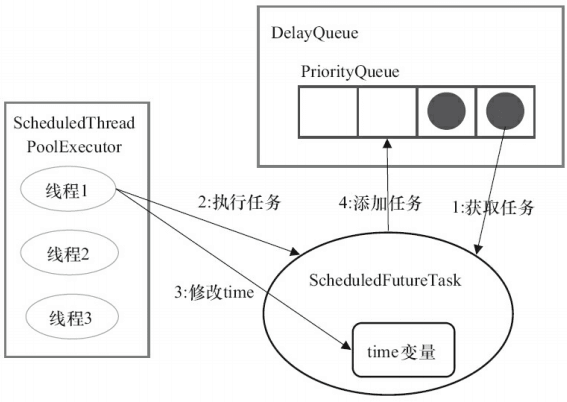

线程池
线程池参数解析：
- 最小线程数量
- 最大线程数量
- 任务队列（包括长度）
- 空闲线程可存活时间（大于最小线程数量的其它线程）
- 饱和策略（线程数量和任务队列都满了该怎么做）
submit()，线程池会返回一个 Future 类型的对象，Future 的get()方法会阻塞当前调用线程直到任务完成。
1 线程池大小确定
有一个简单并且适用面比较广的公式，N（CPU 核心数）：
- CPU 密集型任务(N+1)： 这种任务消耗的主要是 CPU 资源，可以将线程数设置为 N+1，比 CPU 核心数多出来的一个线程是为了防止线程偶发的缺页中断，或者其它原因导致的任务暂停而带来的影响。一旦任务暂停，CPU 就会处于空闲状态，而在这种情况下多出来的一个线程就可以充分利用 CPU 的空闲时间。
- I/O 密集型任务(2N)： 这种任务应用起来，系统会用大部分的时间来处理 I/O 交互，而线程在处理 I/O 的时间段内不会占用 CPU 来处理，这时就可以将 CPU 交出给其它线程使用。因此在 I/O 密集型任务的应用中，我们可以多配置一些线程，具体的计算方法是 2N。
如何判断是 CPU 密集任务还是 IO 密集任务？
- CPU 密集型：简单理解就是利用 CPU 计算能力的任务比如你在内存中对大量数据进行排序。
- IO 密集型：但凡涉及到网络读取，文件读取这类都是，这类任务的特点是 CPU 计算耗费时间相比于等待 IO 操作完成的时间来说很少，大部分时间都花在了等待 IO 操作完成上。
2 常见线程池
2.1 FixedThreadPool
FixedThreadPool 被称为可重用固定线程数的线程池。
/**
* 创建一个可重用固定数量线程的线程池
*/
public static ExecutorService newFixedThreadPool(int nThreads, ThreadFactory threadFactory) {
return new ThreadPoolExecutor(nThreads, nThreads,
0L, TimeUnit.MILLISECONDS,
new LinkedBlockingQueue<Runnable>(),
threadFactory);
}
public static ExecutorService newFixedThreadPool(int nThreads) {
return new ThreadPoolExecutor(nThreads, nThreads,
0L, TimeUnit.MILLISECONDS,
new LinkedBlockingQueue<Runnable>());
}
FixedThreadPool 的 corePoolSize 和 maximumPoolSize 都被设置为 nThreads，这个 nThreads 参数是我们使用的时候自己传递的。
运行过程：
- 如果当前运行的线程数小于
corePoolSize， 如果再来新任务的话，就创建新的线程来执行任务； - 当前运行的线程数等于
corePoolSize后， 如果再来新任务的话，会将任务加入LinkedBlockingQueue； - 线程池中的线程执行完 手头的任务后，会在循环中反复从
LinkedBlockingQueue中获取任务来执行；
2.1.1 不推荐使用FixedThreadPool
FixedThreadPool 使用无界队列 LinkedBlockingQueue（队列的容量为 Integer.MAX_VALUE）作为线程池的工作队列会对线程池带来如下影响 ：
- 当线程池中的线程数达到 corePoolSize 后，新任务将在无界队列中等待，因此线程池中的线程数不会超过 corePoolSize；
- 由于使用无界队列时 maximumPoolSize 将是一个无效参数，因为不可能存在任务队列满的情况。所以，通过创建 FixedThreadPool的源码可以看出创建的 FixedThreadPool 的 corePoolSize 和 maximumPoolSize 被设置为同一个值。
- 由于 1 和 2，使用无界队列时 keepAliveTime 将是一个无效参数；
- 运行中的 FixedThreadPool（未执行 shutdown()或 shutdownNow()）不会拒绝任务，在任务比较多的时候会导致 OOM（内存溢出）。
2.2 SingleThreadExecutor
SingleThreadExecutor 是只有一个线程的线程池。
/**
*返回只有一个线程的线程池
*/
public static ExecutorService newSingleThreadExecutor(ThreadFactory threadFactory) {
return new FinalizableDelegatedExecutorService
(new ThreadPoolExecutor(1, 1,
0L, TimeUnit.MILLISECONDS,
new LinkedBlockingQueue<Runnable>(),
threadFactory));
}
public static ExecutorService newSingleThreadExecutor() {
return new FinalizableDelegatedExecutorService
(new ThreadPoolExecutor(1, 1,
0L, TimeUnit.MILLISECONDS,
new LinkedBlockingQueue<Runnable>()));
}
新创建的 SingleThreadExecutor 的 corePoolSize 和 maximumPoolSize 都被设置为 1.其他参数和 FixedThreadPool 相同。
运行过程：
- 如果当前运行的线程数少于
corePoolSize，则创建一个新的线程执行任务； - 当前线程池中有一个运行的线程后，将任务加入
LinkedBlockingQueue; - 线程执行完当前的任务后，会在循环中反复从
LinkedBlockingQueue中获取任务来执行；
2.2.1 不推荐使用SingleThreadExecutor
SingleThreadExecutor 使用无界队列 LinkedBlockingQueue 作为线程池的工作队列（队列的容量为 Intger.MAX_VALUE）。
SingleThreadExecutor 使用无界队列作为线程池的工作队列会对线程池带来的影响与 FixedThreadPool 相同。说简单点就是可能会导致 OOM，
2.3 CachedThreadPool
CachedThreadPool 是一个会根据需要创建新线程的线程池。
/**
* 创建一个线程池，根据需要创建新线程，但会在先前构建的线程可用时重用它。
*/
public static ExecutorService newCachedThreadPool(ThreadFactory threadFactory) {
return new ThreadPoolExecutor(0, Integer.MAX_VALUE,
60L, TimeUnit.SECONDS,
new SynchronousQueue<Runnable>(),
threadFactory);
}
public static ExecutorService newCachedThreadPool() {
return new ThreadPoolExecutor(0, Integer.MAX_VALUE,
60L, TimeUnit.SECONDS,
new SynchronousQueue<Runnable>());
}
CachedThreadPool 的corePoolSize 被设置为空（0），maximumPoolSize被设置为 Integer.MAX.VALUE，即它是无界的，这也就意味着如果主线程提交任务的速度高于 maximumPool 中线程处理任务的速度时，CachedThreadPool 会不断创建新的线程。极端情况下，这样会导致耗尽 cpu 和内存资源。
运行过程：
- 首先执行
SynchronousQueue.offer(Runnable task)提交任务到任务队列。如果当前maximumPool中有闲线程正在执行SynchronousQueue.poll(keepAliveTime,TimeUnit.NANOSECONDS)，那么主线程执行offer操作与空闲线程执行的poll操作配对成功，主线程把任务交给空闲线程执行，execute()方法执行完成，否则执行下面的步骤 2； - 当初始
maximumPool为空，或者maximumPool中没有空闲线程时，将没有线程执行SynchronousQueue.poll(keepAliveTime,TimeUnit.NANOSECONDS)。这种情况下，步骤 1 将失败，此时CachedThreadPool会创建新线程执行任务，execute方法执行完成；
2.3.1 不推荐使用CachedThreadPool
CachedThreadPool允许创建的线程数量为 Integer.MAX_VALUE ，可能会创建大量线程，从而导致 OOM。
2.4 ScheduledThreadPoolExecutor
ScheduledThreadPoolExecutor 主要用来在给定的延迟后运行任务，或者定期执行任务。
这个在实际项目中基本不会被用到，也不推荐使用，简单了解一下思想即可。
2.4.1 运行机制
ScheduledThreadPoolExecutor 使用的任务队列 DelayQueue 封装了一个 PriorityQueue，PriorityQueue 会对队列中的任务进行排序：
- 执行所需时间短的放在前面先被执行(
ScheduledFutureTask的time变量小的先执行)， - 如果执行所需时间相同则先提交的任务将被先执行(
ScheduledFutureTask的squenceNumber变量小的先执行)。

ScheduledThreadPoolExecutor 的执行主要分为2大部分：
- 当调用
ScheduledThreadPoolExecutor的scheduleAtFixedRate()方法或者scheduleWithFixedDelay()方法时，会向ScheduledThreadPoolExecutor的DelayQueue添加一个实现了RunnableScheduledFuture接口的ScheduledFutureTask。 - 线程池中的线程从
DelayQueue中获取ScheduledFutureTask，然后执行任务。
2.4.2 执行周期任务的步骤
ScheduledThreadPoolExecutor 为了实现周期性的执行任务，对 ThreadPoolExecutor做了如下修改：
- 使用
DelayQueue作为任务队列； - 获取任务的方不同；
- 执行周期任务后，增加了额外的处理。

- 线程 1 从
DelayQueue中获取已到期的ScheduledFutureTask(DelayQueue.take())。到期任务是指ScheduledFutureTask的time大于等于当前系统的时间； - 线程 1 执行这个
ScheduledFutureTask； - 线程 1 修改
ScheduledFutureTask的time变量为下次将要被执行的时间； - 线程 1 把这个修改 time 之后的
ScheduledFutureTask放回DelayQueue中（DelayQueue.add()）。
2.4.3 ScheduledThreadPoolExecutor 和 Timer 的比较
| - | Timer | ScheduledThreadPoolExecutor |
|---|---|---|
| 对系统时钟的变化 | 敏感 | 不敏感 |
| 线程数量 | 只有一个执行线程，因此长时间运行的任务可以延迟其他任务 | 可以配置任意数量的线程。 此外，如果你想（通过提供 ThreadFactory），你可以完全控制创建的线程; |
| 运行时异常 | 在TimerTask 中抛出的运行时异常会杀死一个线程，从而导致 Timer 死机:-( ...即计划任务将不再运行。 | 不仅捕获运行时异常，还允许您在需要时处理它们（通过重写 afterExecute 方法ThreadPoolExecutor）。抛出异常的任务将被取消，但其他任务将继续运行。 |
综上，在 JDK1.5 之后，你没有理由再使用 Timer 进行任务调度了。
3 Excutor使用
- 主线程首先要创建实现
Runnable或者Callable接口的任务对象。 - 把创建完成的实现
Runnable/Callable接口的 对象直接交给ExecutorService执行:ExecutorService.execute(Runnable command)或者也可以把Runnable对象或Callable对象提交给ExecutorService执行（ExecutorService.submit(Runnable task)或ExecutorService.submit(Callable <T> task)）。 - 如果执行
ExecutorService.submit(…)，ExecutorService将返回一个实现Future接口的对象（我们刚刚也提到过了执行execute()方法和submit()方法的区别，submit()会返回一个FutureTask对象）。由于FutureTask实现了Runnable，我们也可以创建FutureTask，然后直接交给ExecutorService执行。 3.1 最后，主线程可以执行FutureTask.get()方法来等待任务执行完成。主线程也可以执行FutureTask.cancel(boolean mayInterruptIfRunning)来取消此任务的执行。